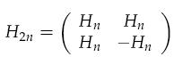
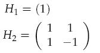

Home Page
F.A.Qs
Statistical Charts
Past Contests
Scheduled Contests
Award Contest
| Online Judge | Problem Set | Authors | Online Contests | User | ||||||
|---|---|---|---|---|---|---|---|---|---|---|
| Web Board Home Page F.A.Qs Statistical Charts | Current Contest Past Contests Scheduled Contests Award Contest | |||||||||
|
Language: Sylvester construction
Description A Hadamard matrix of order n is an n x n matrix containing only 1s and -1s, called Hn, such that HnHnT = nIn where In is the n x n identity matrix. An interesting property of Hadamard matrices is that they have the maximum possible determinant of any n x n matrix with elements in the range [-1, 1]. Hadamard matrices have applications in errorcorrecting codes and weighing design problems.
The Sylvester construction is a way to create a Hadamard matrix of size 2n given Hn. H2n can be constructed as:  for example:  and so on. In this problem you are required to print a part of a Hadamard matrix constructed in the way described above. Input The first number in the input is the number of test cases to follow. For each test case there are five integers: n, x, y, w and h. n will be between 1 and 262 (inclusive) and will be a power of 2. x and y specify the upper left corner of the sub matrix to be printed, w and h specify the width and height respectively. Coordinates are zero based, so 0 ≤ x,y < n. You can assume that the sub matrix will fit entirely inside the whole matrix and that 0 < w,h ≤ 20. There will be no more than 1000 test cases. Output For each test case print the sub matrix followed by an empty line. Sample Input 3 2 0 0 2 2 4 1 1 3 3 268435456 12345 67890 11 12 Sample Output 1 1 1 -1 -1 1 -1 1 -1 -1 -1 -1 1 1 -1 -1 1 1 -1 -1 1 1 -1 -1 -1 -1 1 1 -1 -1 1 1 -1 -1 1 1 1 1 -1 -1 -1 -1 1 1 1 1 -1 1 -1 -1 1 -1 1 1 -1 1 -1 1 -1 -1 -1 -1 1 1 1 1 -1 -1 -1 -1 1 -1 1 1 -1 1 -1 -1 1 -1 -1 -1 -1 -1 -1 -1 1 1 1 1 1 -1 1 -1 1 -1 1 1 -1 1 -1 -1 1 1 -1 -1 1 1 1 1 -1 -1 1 1 -1 -1 1 1 -1 1 -1 -1 1 -1 -1 -1 1 1 1 1 1 1 1 1 1 -1 1 1 -1 1 -1 1 -1 1 -1 Source |
[Submit] [Go Back] [Status] [Discuss]
All Rights Reserved 2003-2013 Ying Fuchen,Xu Pengcheng,Xie Di
Any problem, Please Contact Administrator